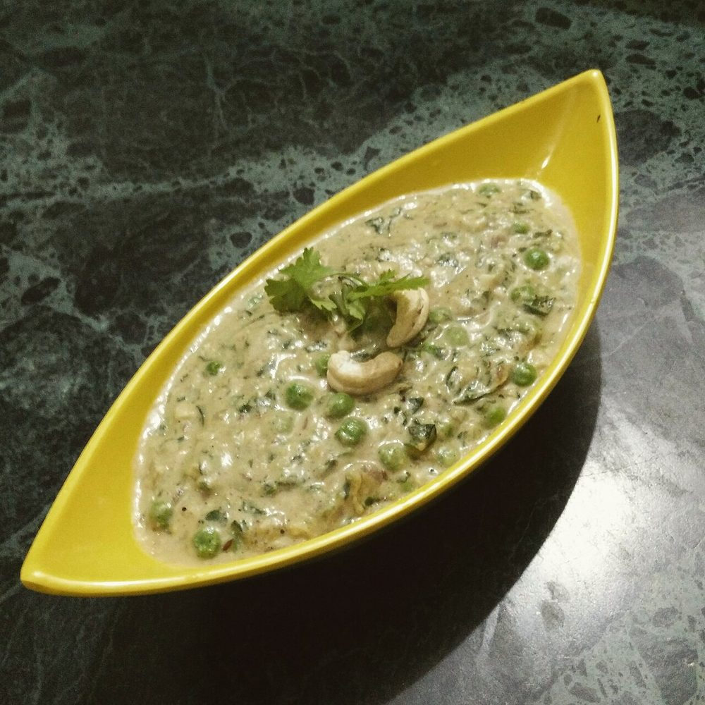

Contains: milk, tree nuts
Checked against the ingredient list for ten allergens: milk, egg, fish, crustaceans, tree nuts, peanuts, sesame, mustard, soy and gluten. Brands vary, so read the label on anything new to you.
Ingredients
Quantities for 4.
- 2 large bunches (300g), leaves picked Methi Leaves
- 1.5 cups (200g) Peas
- 15, soaked in hot water 20 minutes Cashew
- 2 medium (240g), sliced Onion
- 1.5 inch Ginger
- 4 cloves Garlic
- 2 Green Chilli
- 100ml Cream
- 1/2 cup Milk
- 3 tbsp Ghee
- 1 tsp Cumin Seeds
- 3 pods, bruised Cardamomoptional
- 1/2 tsp White Pepperkeeps the gravy pale
- 1/4 tsp Garam Masalaoptional
- 1 tsp Sugar
- to taste Salt
- 1 cup Water
Cookware
stovetop, kadhai, blender
Before you start
- Pick the methi leaves off the stems. The stems are aggressively bitter and stringy.
- Sprinkle the picked leaves with 1 tsp salt, leave 15 minutes, then squeeze out the dark liquid and rinse. This takes the harsh edge off without losing the character.
- Soak the cashews in hot water 20 minutes so they grind to a smooth paste.
Method
- Salt, rest and squeeze the methi leaves as in the prep notes, then chop them roughly.Squeeze hard. The bitterness you want is the pleasant kind, and this is how you get there.
- Boil the onion, ginger, garlic and green chillies in 1 cup water for 8 minutes until soft.
- Blend the boiled mixture with the drained cashews to a completely smooth paste.Do not brown the onions at any point. This gravy should be off-white.
- Heat the ghee in a kadhai and fry the cumin seeds and cardamom for 30 seconds until fragrant.
- Add the chopped methi and fry on medium for 6 minutes until it darkens and the raw green smell turns nutty.Frying the methi properly is what stops the finished dish tasting like grass.
- Stir in the cashew-onion paste and cook 8 minutes on low, stirring constantly so it does not catch.
- Add the peas, milk, white pepper, sugar and 1 tsp salt, and simmer 8 minutes until the peas are tender.
- Turn the heat off and stir in the cream and garam masala.Off the heat, always. This gravy splits if the cream boils.
- Rest 5 minutes covered, taste for salt and sugar, and serve with naan or paratha.
Storage
Keeps 2 days refrigerated. Reheat on the lowest heat with a splash of milk, stirring. Not suitable for freezing.
Nutrition Medium estimate
High protein: 23 g a serving, 18% of the calories
| Per serving259 g | Per 100 g | |
|---|---|---|
| Calories | 511 kcal | 198 kcal |
| Protein | 22.9 g | 9 g |
| Carbohydrate | 62.1 g | 24 g |
| of which sugars | 8.9 g | 3 g |
| Fibre | 22.8 g | 9 g |
| Fat | 25.0 g | 10 g |
| of which saturated | 13.4 g | 5 g |
| of which unsaturated | 6.5 g | 2 g |
Ingredients given to taste count as zero, so the real figures run a little higher. Nearest database match used for garam masala, methi leaves. Estimated from raw ingredients using USDA FoodData Central.
Times, yields, allergens and nutrition are guidance. Use your own judgement on doneness and on storing. More in About.